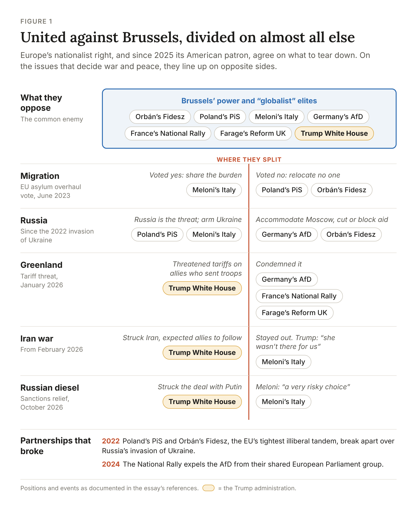
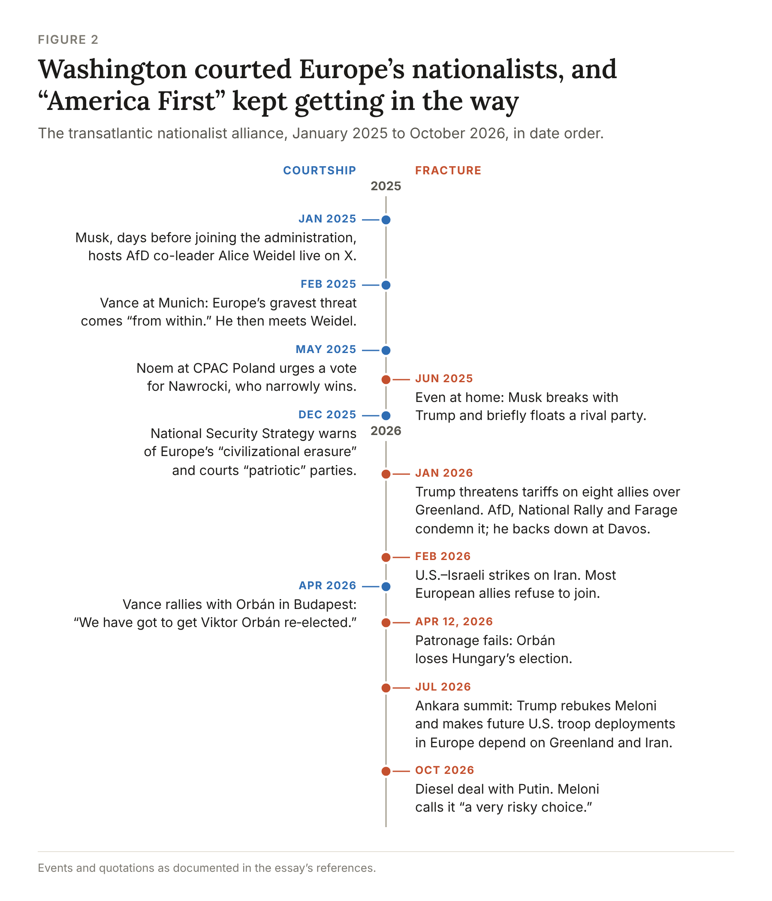
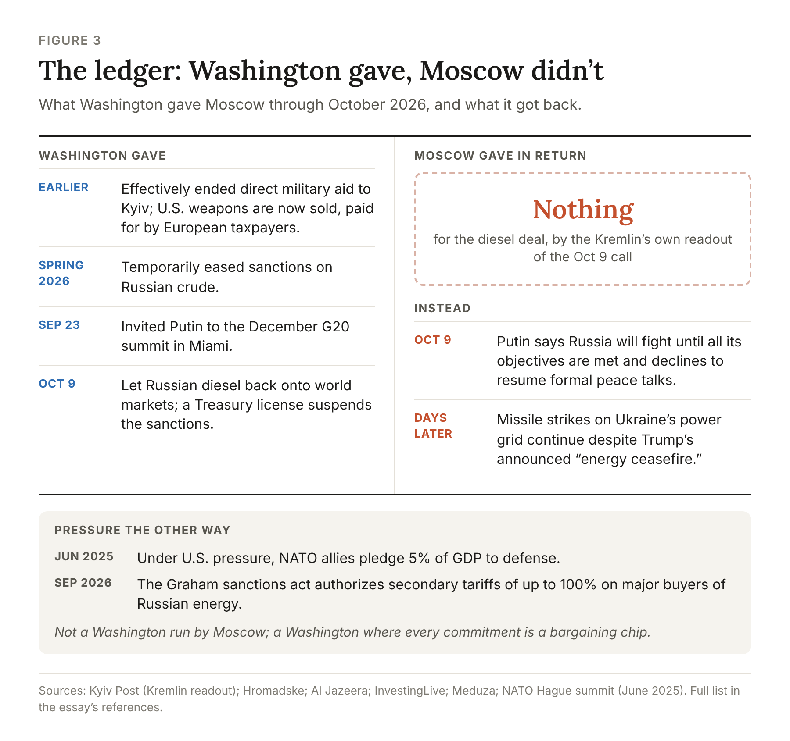
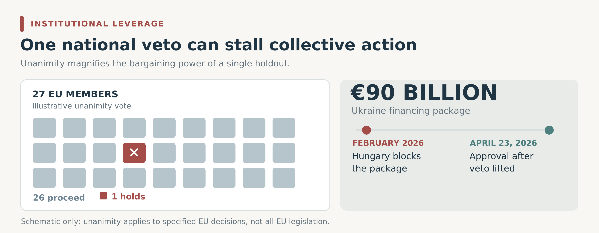
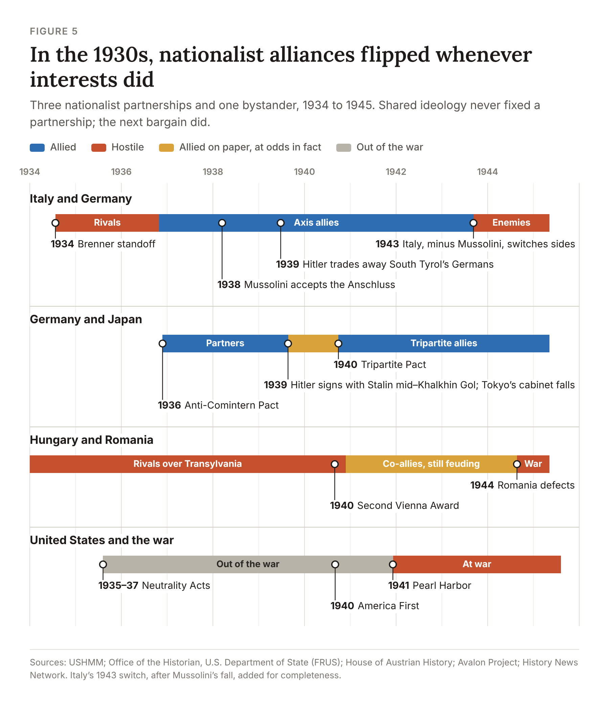
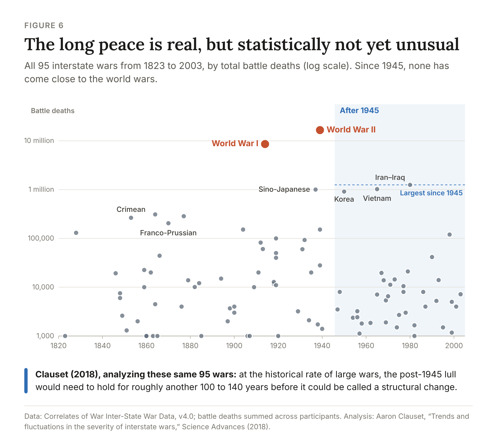
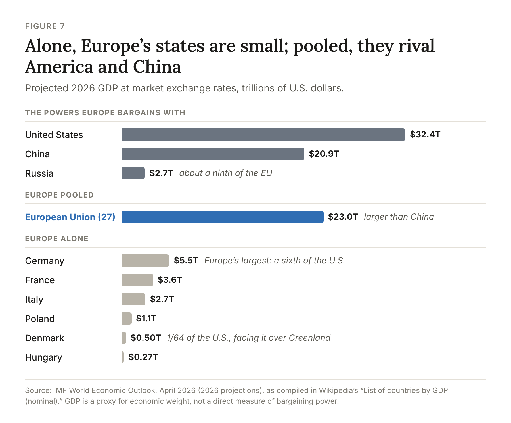

Across Europe and the United States, a new political international is taking shape around a curious proposition: that every nation should put itself first. From Budapest to Washington, nationalist leaders celebrate one another’s electoral victories, borrow one another’s rhetoric, and unite against the institutions they denounce as “globalist.” Promising to restore sovereignty, defend borders, and reclaim power from international bureaucracies, they project the image of a coherent political movement capable of reshaping the West.
Yet a coalition built around national primacy contains a contradiction that no amount of ideological solidarity can resolve. National interests are not interchangeable. What strengthens one country may weaken another, and the institutions nationalists seek to dismantle are often the very mechanisms that allow competing national interests to coexist peacefully.
In short, nationalists make tactical allies, never durable friends. Their coalitions hold while grievances align and fracture the moment solidarity carries a cost.
The stakes are not small. The most powerful nationalist government now sits in Washington, and the alliance it is testing most severely—the American security commitment to Europe—has underpinned the continent’s stability for eight decades. For Vladimir Putin, the nationalist movement need not succeed to serve Russia’s interests. In fact, it may prove more useful if it fails, provided it first weakens the institutions that hold the West together.
1. Nationalists Make Allies of Convenience, Never Friends
Europe’s nationalist parties have found common cause in their opposition to Brussels, objecting to supranational authority, liberal immigration policies, and political elites they portray as detached from ordinary citizens. Yet their unity becomes far less impressive when the conversation shifts from what they oppose to what they actually want.
Italy demands greater European solidarity in managing migration, while Poland and Hungary resist mandatory migrant relocation. Poland’s nationalist right regards Russia as an existential security threat, whereas Germany’s Alternative für Deutschland (AfD) favors restoring relations with Moscow. These divergences have already ruptured ostensibly natural partnerships. Poland’s Law and Justice party and Hungary’s Fidesz, once the twin pillars of Europe’s illiberal alliance, split sharply over Russia’s invasion of Ukraine in 2022. Two years later, Marine Le Pen’s National Rally broke with Germany’s AfD, contributing to its expulsion from their shared European Parliament group.

Europe’s nationalist right is neither a disciplined bloc nor a harmless rabble. It is a negative coalition: united on the institutions it wishes to dismantle, divided on what should replace them.
2. “America First” Collides With Everyone Else’s “First”
Since 2025, the movement’s center of gravity has shifted to Washington (Figure 2). Vice President JD Vance told the Munich Security Conference that Europe’s gravest threat came "from within." The December 2025 National Security Strategy warned of Europe’s "civilizational erasure" and declined to name Russia a threat. By April 2026, Vance was campaigning for Viktor Orbán in Budapest.

Then came Greenland. In January 2026, Trump threatened escalating tariffs on eight European allies that had sent troops to the island at Denmark’s request, and Europe’s nationalists discovered that "America First" meant exactly what it said. The AfD denounced Washington’s "Wild West methods," the National Rally urged Brussels to retaliate, and Nigel Farage called it "a very hostile act." Trump backed down at Davos, but the damage was done: American nationalism had pushed Europe’s nationalists away from the alliance, precisely the estrangement Moscow seeks.
None of this is an accident of personalities. "America First," "France First," and "Hungary First" are competing claims on finite markets, energy, territory, and security. Movements built on those slogans cannot sustain an alliance that requires one nation to bear risks for another, which is the only kind of alliance that matters in a crisis.
3. Moscow Needs Only a Divided, Unpredictable West
Russia’s courtship of the Western right follows a simple calculus. Acting together, the EU, NATO, and the United States dwarf Russia’s economy and military. Moscow cannot defeat that coalition head-on, so it corrodes it from within.
The Kremlin has invested accordingly, from a €9.4 million loan to Le Pen’s party in 2014 to nearly $10 million that RT employees routed to American commentators who never knew the source. Yet the nationalist surge is not a Russian operation. Voters are rebelling over stagnant wages, unaffordable housing, and elites who met their anxiety with condescension. Moscow did not create these fractures; it exploits them.
The bigger prize, though, is in Washington. The Kremlin does not need an American administration loyal to Russia, only one whose allies cannot predict whether it will honor its commitments. October 2026 showed how that works (Figure 3). With U.S. diesel prices up more than 60 percent since the Iran war began and the midterms weeks away, Trump spoke with Putin on October 9; by the Kremlin’s own readout, Putin offered nothing. The same day, Washington let Russian diesel back onto world markets.

Washington has also pushed the other way, authorizing secondary tariffs on buyers of Russian energy and pressing allies into a 5 percent NATO spending pledge. This is not a Washington controlled by Moscow, but one for which sanctions, weapons, and even the credibility of Article 5 are bargaining chips. For a revisionist Kremlin, a superpower whose guarantees can be haggled over in an election season is the next best thing to an ally.
4. A Single Holdout Can Hold an Alliance Hostage
Europe’s institutions magnify the power of a single holdout. EU decisions on foreign policy, sanctions, and enlargement still require all 27 member states to agree, so one government can turn obstruction into bargaining power. Orbán showed how (Figure 4): in February 2026 he blocked a €90 billion loan meant to keep Ukraine solvent, demanding that Kyiv first restore the flow of Russian oil through the Druzhba pipeline. The loan passed only after he lost the April 12 election.

The West’s most consequential veto, though, belongs to Washington, and it is exercised not by voting no but by casting doubt. The Pentagon is pulling troops from Germany and Romania and reviewing its posture across Europe. Deterrence weakens the moment Moscow begins to doubt Washington’s willingness to act.
5. The 1930s Show Nationalist Alliances Follow Interests, Not Principles
The lesson of the 1930s is that alliances among nationalist and far-right regimes were never fixed. Even the most ideologically kindred governments of the era switched between partner and adversary again and again, and much of that switching happened in peacetime, years before Europe went to war. What held each partnership together was territory, resources, and timing, not shared principle (Figure 5).

6. Eighty Calm Years Can Hide a Fragile Peace
Could a fraying alliance really lead to a major war? Start with the record (Figure 6). Interstate wars never stopped: 95 broke out between 1823 and 2003, 38 of them after 1945, including three, in Korea, Vietnam, and between Iran and Iraq, that each killed around a million soldiers. What stopped was the escalation of such conflicts into world wars. That is a real achievement, but not yet a proven one. One statistical analysis of the full record finds the post-1945 lull still indistinguishable from chance; it would need to hold another 100 to 140 years to count as a structural change.

7. Going It Alone Makes Nations Weaker, Not Freer
Which brings me to the con at the heart of the nationalist pitch: the claim that walking away from Brussels or NATO makes mid-sized nations masters of their own destiny. This gets the economics exactly backwards. In a world of continental-scale powers, bargaining power comes from size. Germany, Europe’s largest economy, is about a sixth the size of the United States; the EU as a whole is bigger than China. The realists who built Europe’s postwar institutions, having just crawled out of the rubble of the Second World War, understood that mid-sized countries that stand alone don’t become sovereign. They become lunch for the biggest bully on the map. Pooling sovereignty traded the vanity of going it alone for real power (Figure 7).

Denmark kept Greenland not through Danish might but through its allies’ solidarity, and when Jordan Bardella faced American tariffs, he reached for Brussels’ anti-coercion instrument. Sovereignty-first rhetoric confuses the freedom to act alone with the power to shape outcomes.
8. Only Durable Barriers Keep the Wolves Out
A barrier that depends on one leader’s convenience lasts only as long as that convenience. NATO, the EU, and America’s security guarantee were built to outlast any leader’s mood: they keep allies from turning on one another and promise any aggressor the combined weight of the richest bloc on earth.
That barrier is now being weakened from inside, by the nationalist governments it was built to protect. Europe is rearming: NATO’s European members and Canada raised defense spending by roughly 20 percent in 2025. Whether Europe can replace American capabilities before a deterrence gap opens remains an open question.
The nationalist international will never resolve its contradictions, because its members’ interests genuinely conflict. For Moscow, that is the point. Russia does not need Europe’s nationalists to agree with one another, only to distrust the institutions that let Europe act together. It does not need Washington as an ally, only American guarantees vague enough that risks it would once have avoided start to look worth taking.
The danger, then, is not that the nationalists will build a lasting new order. They won’t. It is that, before they turn on one another, they will tear down the fence that has kept the wolves out for eighty years, an order that took two world wars to build and may prove far harder to restore.
References
The 1930s
- USHMM: Nazi Territorial Aggression: The Anschluss (the July 1934 putsch and the 1938 annexation)
- German History in Documents and Images: Mussolini's troops at the Brenner Pass, 1934
- FRUS 1938, vol. I: Phillips telegram on Mussolini's acceptance of the Anschluss (Mar 16, 1938)
- USHMM: Axis Powers in World War II (Ethiopia sanctions, Anti-Comintern and Tripartite Pacts)
- House of Austrian History: 1939, the Hitler–Mussolini Pact on South Tyrol
- USHMM: Romania (Second Vienna Award, August 1944 switch)
- Avalon Project: Treaty of Peace with Romania, 1947, Art. 2 (Vienna Award annulled)
- FRUS 1939, vol. IV: Hiranuma cabinet resigns over the German–Soviet Pact (Aug 29, 1939)
- History News Network: Stuart Goldman, The Forgotten Soviet-Japanese War of 1939
- Office of the Historian: The Neutrality Acts, 1930s
- USHMM: America First Committee (1940–1941)
- Viereck v. United States, 318 U.S. 236 (1943) and TIME: The Memory of Fish (1942) (propaganda under congressional frank)
Europe's nationalist right and Russia
- Euronews: EU countries strike deal on migration rules (Jun 8, 2023)
- Euronews: Kaczyński slams Hungarian ally Orbán over Ukraine (Apr 8, 2022)
- Al Jazeera: Germany's AfD expelled from far-right EU parliament group (May 23, 2024)
- AFP via The Local: French far-right party says Russian loan repaid (Sep 21, 2023)
- Reuters via Swissinfo: Czechs sanction Medvedchuk, website over pro-Russian EU political influence (Mar 27, 2024)
- U.S. Department of Justice: Two RT employees indicted for covertly funding a U.S. company (Sep 4, 2024) and CNN: the commentators were unaware of the Russian funding
- Carnegie: Dimitar Bechev, Will the Far Right Change Europe's Russia Policy? (Sep 23, 2026)
The American right and Europe
- Christian Science Monitor: Vance tells Europe's leaders to stop building a firewall against the far right (Feb 15, 2025)
- Lawrence Freedman: How Europe should respond to Trump's National Security Strategy (Dec 10, 2025) (Vance's "from within"; Kremlin reaction)
- Notes from Poland: Noem endorses Nawrocki at CPAC Poland (May 27, 2025)
- Lawfare: Trump administration releases 2025 National Security Strategy (Dec 5, 2025) and Global News: the strategy's "civilizational erasure" language
- Christian Science Monitor: Trump's national security strategy treats longtime allies as threats (Dec 8, 2025)
- Bloomberg via Boston Globe: Trump's Greenland play is a step too far for Europe's far right (Jan 2026) (AfD trips to Washington, Weidel, Chrupalla, Bardella)
- The National Desk: Trump says of Orbán, "I'm with him all the way," as Vance visits Hungary (Apr 7, 2026)
- CBS News: Trump to impose tariffs on countries that send forces to Greenland (Jan 17, 2026)
- AP: Trump's Greenland ambitions strain MAGA ties with Europe's far right (Jan 2026)
- Reuters: Europe's far right and populists distance themselves from Trump over Greenland (Jan 21, 2026)
- Bloomberg: Trump drops tariff threat after "framework" Greenland deal (Jan 21, 2026)
- Reuters via Chronicle.lu: the US–Israeli war on Iran, launched Feb 28, 2026
- Adnkronos: Trump on Meloni at the Ankara summit, "she wasn't there for us" (Jul 7, 2026)
- Wikipedia: Trump–Musk feud
Washington, Moscow and Ukraine, 2026
- Kyiv Post: Kremlin readout of the Oct 9 Trump–Putin call
- Ukrainska Pravda: Trump says it's time for Ukraine to get a new president (Oct 10, 2026)
- InvestingLive: Trump announces an energy ceasefire two days after the diesel deal (Oct 11, 2026)
- NPR via OPB: Bipartisan senators urge Trump to rescind the Russian diesel deal (Oct 13, 2026)
- Kyiv Independent: Meloni says the diesel deal legitimizes Moscow (Oct 14, 2026) and Reuters via Al-Monitor: "very risky choice"
- Brussels Signal: diesel prices, the energy ceasefire, and Meloni's warning (Oct 2026)
- NV: Meloni opposes inviting Putin to the G20 (Apr 24, 2026)
- Al Jazeera: Trump administration invites Putin to the G20 summit in Miami (Sep 23, 2026)
- Hromadske: US eased, then reinstated, sanctions on Russian oil (Mar–May 2026)
- Meduza: Trump signs the Lindsey O. Graham Sanctioning Russia and Iran Act (Sep 2026)
- PISM: The Ankara Summit, a step towards the Europeanisation of NATO (Jul 2026)
- CNN via KVIA: Trump mused about cutting troops in Europe by a third (Jul 6, 2026)
Hungary, the €90 billion loan, and EU unanimity
- European Pravda: EU leaders call Orbán's block on the €90bn loan "unacceptable" (Mar 20, 2026)
- Bloomberg: Ukraine to get €90bn EU loan as Orbán heads for the exit (Apr 22, 2026)
- Euronews: EU approves €90bn loan after Hungary lifts its veto (Apr 23, 2026)
- Xpatloop: No military aid from Hungary to Ukraine, says Magyar (Jul 9, 2026)
- European Pravda: Zelenskyy holds first one-on-one meeting with Magyar (Oct 16, 2026)
- Reuters via ThePrint: Hungary and Ukraine agree to reset ties (Oct 16, 2026)
- Istituto Affari Internazionali: Shadows of Unanimity, EU foreign and security policy (Jul 2026)
- Euronews: 11 EU countries demand an end to obstructive foreign-policy vetoes (Sep 1, 2026)
War and peace in the long run
- University of Colorado Boulder: Nothing unusual about the long peace since WWII, on Aaron Clauset, "Trends and fluctuations in the severity of interstate wars," Science Advances (2018)
- Bear F. Braumoeller, Only the Dead: The Persistence of War in the Modern Age (Oxford University Press, 2019)
- Correlates of War Project: COW War Data, 1816–2007 (v4.0) (Inter-State War Data behind Figure 6)
- Wikipedia: List of countries by GDP (nominal) (IMF World Economic Outlook, April 2026 projections, behind Figure 7)
Comments